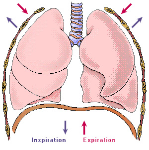
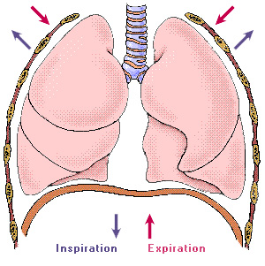

- Respiratory Muscles and Inspiration
- Quiet Inspiration - active process:
- 1. Contraction of diaphragm thoracic vol vertically
- 2. Parasternal and external intercostals contract raising the ribs thoracic vol laterally (horizontally)
- Sternum
- Before Inspiration
- Inspiration
 
